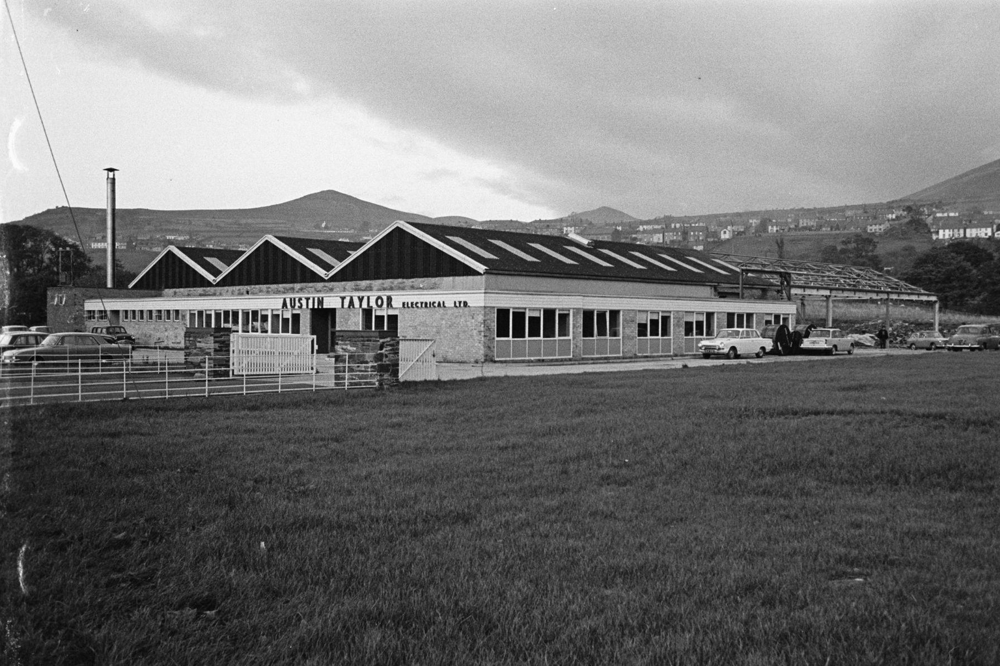
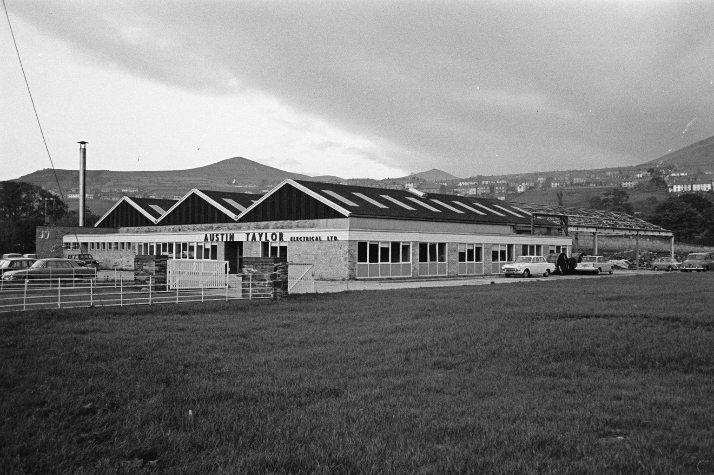
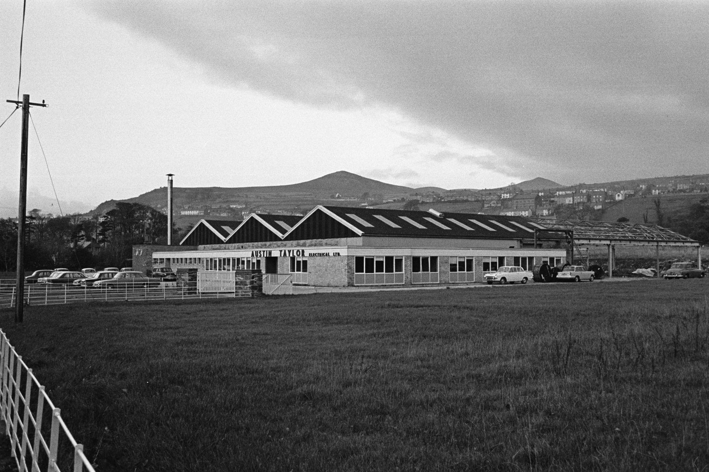

A validation phase is required before committing capital to Generative AI and Its Impact on Business Operations. This report tests whether the 2026 China disaster evidence justifies prioritizing investment and partnership in climate-resilience infrastructure segments — water conservancy digitalization, monitoring and early warning, and drainage equipment — and how a China-UAE cross-border solution should be structured. The recommendation boundary is validation_only: the evidence supports structured validation and piloting, not a stronger commitment. Private-document evidence is the primary source of truth; approved supplementary web evidence is used only to fill documented gaps and is labeled as such. Where a claim appears in neither the private context nor the approved source-backed evidence set, this report states exactly: "Not stated in the validated evidence."
The 2026 Disaster Evidence Is Concentrated Enough to Justify Validation, Not Yet a Full Commitment
The 2026 China disaster season produced a dense, quantified loss record concentrated in Guangxi, Hubei, Chongqing and Gansu, with large-scale evacuation and infrastructure damage in Zhejiang, Hebei, Liaoning, Jilin and Guangdong. This is sufficient evidence to validate demand for climate-resilience infrastructure, but the absence of a complete national loss aggregation means it is not sufficient to justify a full-scale investment commitment.

The private document records that as of the morning of 29 July 2026, the disaster pattern combined successive typhoon landfalls, a north-south oscillating rain belt, and overlapping floods and landslides. This geographic concentration matters because it maps directly onto the segments the private document identifies as investable: reservoir safety, urban drainage, and geological monitoring.
The quantified record is specific. Typhoon Maysak made landfall in Hainan on 3–9 July and its residual circulation produced extreme rainfall in Guangxi, where the Liulan reservoir in Hengzhou overtopped and breached; Guangxi recorded 39 deaths and 9 missing, of which the Liulan reservoir event accounted for 26 deaths and 7 missing, and Nanning relocated 64,500 people. Hubei's Huanggang, Huangshi, Ezhou and Xianning experienced thunderstorms, gales and an EF2 tornado on 6–7 July, affecting 14,600 people with 11 deaths, 1 missing and 331 injured. On 17 July, a large landslide in Pengshui, Chongqing buried more than ten residential and commercial buildings and a passenger vehicle; by 28 July, 41 deaths, 20 missing and 10 injured were confirmed. On 26 July, flash flooding at Shuangshimen scenic area in Weiyuan, Dingxi, Gansu killed 10 and injured 23, with 174 rescued and 305 firefighters deployed.
The private document's own mechanical aggregation of the four events with clear figures directly linked to rainstorms or typhoons — Guangxi, Hubei, Chongqing Pengshui and Gansu Weiyuan — yields at least 101 deaths, 30 missing and 364 injured. Critically, the document states this is not an official national total: Guangxi death and missing rosters may overlap, scattered casualties elsewhere are not fully included, and the 21 deaths from the Gansu Tanchang landslide are excluded.
The forward risk remains live. On 29 July, the Central Meteorological Observatory continued a yellow rainstorm warning covering Guangdong, Guangxi, Hubei, Sichuan, Henan, Hebei, Shandong, Jilin, Heilongjiang and northeastern Inner Mongolia, with possible flash floods, landslides, urban waterlogging, thunderstorms, gales and hail. The National Climate Center expects 2–3 more typhoons to make landfall or affect China during the 'seven-down, eight-up' period, possibly including one strong typhoon moving north, with above-average rainfall in the Beijing-Tianjin-Hebei and Northeast regions and continued typhoon risk along the South and East China coasts.
- text.md — establishes the reservoir-safety failure and the scale of evacuation that drives water conservancy demand.
- text.md — establishes the Pengshui landslide as the single largest casualty event and the anchor for geological monitoring demand.
- text.md — establishes both the aggregate loss signal and its explicit incompleteness, which bounds the investment case.
Insurance and Fiscal Flows Confirm Real Losses but Show the Funding Is Still Partial
Insurance claims and government fiscal transfers provide the most reliable quantified loss indicators available, and they confirm that the 2026 losses are material. However, the same data show that funding is partial, fragmented across provinces and instruments, and not yet a complete economic loss estimate.

The private document reports that as of 13 July 2026, insurers across 20 provinces and regions including Guangxi, Hubei and Zhejiang had received nearly 380,000 claims, with estimated losses of RMB 6.38 billion and RMB 2.89 billion already paid; Typhoon Bawei alone accounted for RMB 540 million of estimated losses, per Financial Regulatory Administration data. After Typhoon Hongxia affected Guangdong, by 27 July Guangdong's insurance sector had received 20,005 claims and paid approximately RMB 36.79 million, with the amount still rising.
On the fiscal side, the central government urgently pre-allocated RMB 180 million to support Guangdong, Fujian, Jiangxi, Hunan, Liaoning and Jilin for rescue, resettlement, hazard inspection and rural housing repair, per the Ministry of Emergency Management. Separately, the National Development and Reform Commission allocated RMB 100 million to Zhejiang and RMB 30 million each to Hebei and Jilin to support recovery of roads, water conservancy, schools and hospitals.
As background, the private document records that in the first half of 2026, floods and geological disasters caused 11.326 million person-times of impact, 124 deaths and missing, and RMB 33.87 billion in direct economic losses; all natural disasters caused RMB 42.14 billion in direct losses, per first-half Ministry of Emergency Management data. This half-year baseline is the most defensible anchor for sizing the recurring annual loss pool, because it is an official aggregate rather than a mechanical sum of selected events.
The causal mechanism linking these flows to investment is straightforward: insurance payouts and fiscal transfers reduce the immediate cost of disaster to households and local governments, but they do not by themselves fund the preventive infrastructure that would reduce future losses. The private document's investment logic is that the recurring nature of the loss — evidenced by the half-year RMB 33.87 billion flood and geological loss figure — is what creates a multi-year, policy-backed order pipeline for prevention and monitoring, rather than a one-off reconstruction spike.
- text.md — establishes the fiscal response scale and its explicit limitation as support funding, not loss.
- text.md — establishes the official half-year loss baseline that is the most defensible sizing anchor.
Segment Ranking: Monitoring and Digitalization Beat Emergency Equipment on Durability
The private document ranks investable segments by durability, not by headline demand. Geological disaster monitoring and early warning, and water conservancy digitalization, are identified as higher-barrier and higher-recurring-revenue segments, while emergency equipment offers the most direct short-term orders but volatile revenue tied to disaster occurrence.

The private document states that geological disaster monitoring and early warning will be driven by the successive landslides in Chongqing and Gansu, and will require slope radar, InSAR satellite monitoring, BeiDou positioning, rainfall and soil moisture sensors, AI landslide warning, and slope monitoring for scenic areas, mining areas, highways and railways.
Water conservancy digitalization is the second-ranked segment. The private document states that the Guangxi reservoir incident will push nationwide safety appraisal of small and medium reservoirs, reinforcement, seepage monitoring and digital management, with opportunities in water conservancy EPC, dam inspection, sensors, drone inspection, drainage pumping stations and long-term O&M.
Emergency equipment and mobile infrastructure is explicitly ranked as the most direct short-term order segment but the least durable: large-flow drainage pumps, rescue robots, drones, satellite communication terminals, mobile energy storage and generators, emergency water purification equipment, boats and temporary resettlement facilities. The causal mechanism is recurring revenue versus episodic revenue. Monitoring and digitalization generate ongoing service income because sensors, radar, InSAR and AI warning systems require calibration, data services and maintenance after installation. Emergency equipment generates revenue only when a disaster occurs, so its order book is inherently lumpy.
Micro-market implications are not stated in the validated evidence. The private document names geographies — Guangxi, Hubei, Chongqing, Gansu, Shenzhen, Nanning, Shenyang — and segments, but it does not rank or prioritize specific micro-markets within those geographies. Therefore, the segment ranking translates into a validation priority for the two higher-barrier segments, but any micro-market prioritization must be treated as not stated in the validated evidence and cannot be used to justify a narrower geographic focus at this stage.
- text.md — establishes the higher-barrier, higher-recurring-revenue ranking of geological monitoring and early warning.
- text.md — establishes the volatility of emergency equipment revenue and its lower durability ranking.
Opportunity Assessment Must Be Bounded: The Private Evidence Does Not Support a Single Point Estimate
The private document does not provide a serviceable market size for the target segments, and the approved supplementary web evidence provides only adjacent market and funding figures. Any sizing must therefore be presented as a bounded range with explicit method limitations, not as a single point estimate.

The approved supplementary web evidence, labeled as supplementary, includes a global smart water management market valued at USD 24.53 billion in 2025, expected to reach USD 82.73 billion by 2036 from USD 27.39 billion in 2026, at a CAGR of 11.7% from 2026 to 2036, per Meticulous Research. The same source states that China invested a record USD 182.4 billion (RMB 1.28 trillion) in water conservancy facilities in 2025, exceeding the trillion-yuan mark for the fourth consecutive year, and that Shenzhen deployed IoT-enabled smart metering across over 80% of residential households, achieving non-revenue water rates of approximately 6.2%.
The same supplementary source reports that 30% of surveyed respondents deployed more than USD 500 million into the water sector in 2024, and that a majority of organizations expected to increase investment levels in 2025 compared to the previous year, citing the White & Case LLP 'Currents of Capital 2025' report. It also reports that Singapore's PUB utility achieved a 54.4% reduction in non-revenue water since 2010 and a 750% increase in smart meter coverage since 2015.
The private document provides no serviceable market size, no customer count, no ARPU and no adoption rate for water conservancy digitalization, geological monitoring or drainage equipment. Therefore, the top-down, bottom-up, adoption-funnel, value-pool and supply-side sizing methods described in the argument structure cannot be populated with approved values.
The private loss pool and the supplementary market/investment figures are not directly comparable because they differ in unit, geography and time base. The private loss pool is measured in RMB of disaster losses for China in the first half of 2026, while the supplementary figures are global market values in USD, China-wide investment in USD, and multi-year CAGRs. The supplementary figures are used only to frame the macro environment, not to size the serviceable market for the target segments.
- text.md — establishes the recurring loss pool that bounds the demand logic.
- Smart Water Management Market (2026-2036) - Meticulous Research — For instance, according to the White & Case LLP “Currents of Capital 2025” report, 30% of surveyed respondents deployed more than USD 500 million into the water sector in 2024, and a majority of organizations expected to increase investment levels in 2025 compared to the previous year
Scenarios and Sensitivity: What Would Move the Case Up or Down
Because the approved evidence contains no scenario probabilities, the scenario framework must be qualitative and trigger-based. The base case is continued policy-backed spending on prevention and monitoring; the upside case is accelerated national reservoir safety and urban drainage programs; the downside case is that fiscal constraints and incomplete loss aggregation slow the order pipeline.
Base case: The base case rests on the private document's forward-risk assessment: the National Climate Center expects 2–3 more typhoons to make landfall or affect China during the 'seven-down, eight-up' period, possibly including one strong typhoon moving north, with above-average rainfall in Beijing-Tianjin-Hebei and the Northeast and continued typhoon risk along the South and East China coasts.
Upside case: The upside case is triggered by a national-level reservoir safety and urban drainage program. The private document states that the Guangxi reservoir incident will push nationwide safety appraisal of small and medium reservoirs, reinforcement, seepage monitoring and digital management, and that urban waterlogging in Shenyang, Nanning and Shenzhen exposes inadequate drainage standards, potentially making underground flood storage, retention ponds, drainage networks, pumping stations, flood barriers, sponge cities and urban flood digital twins priority investments.
Downside case: The downside case is that fiscal constraints and incomplete loss aggregation slow the order pipeline. The private document notes that local government fiscal capacity is a key screening criterion, and that receivables collection and cash flow are critical. This would reduce the urgency of validation and could lead to a decision to defer investment.
Sensitivity drivers include the frequency and severity of future typhoons, the pace of national reservoir safety appraisals, the level of central budget investment in urban drainage, and the speed of insurance payouts and fiscal transfers. The private document does not provide probabilities for these scenarios, so the framework must be qualitative. Management should monitor these triggers and adjust the validation program accordingly, rather than assuming a fixed probability distribution.
- text.md — establishes the reservoir-safety failure that could trigger a national program.
- Smart Water Management Market (2026-2036) - Meticulous Research — For instance, according to the White & Case LLP “Currents of Capital 2025” report, 30% of surveyed respondents deployed more than USD 500 million into the water sector in 2024, and a majority of organizations expected to increase investment levels in 2025 compared to the previous year
Where to Start
The near-term objective is to turn the evidence into a few choices that preserve learning before committing scarce capital or operating capacity.
-
0-3 monthsCommission a validation study on water conservancy digitalization and geological monitoring, focusing on customer interviews and order-book diligence. Progress should be visible through completion of at least 20 structured interviews with potential government and enterprise customers, and a documented assessment of order backlogs for target companies. The private document's screening criteria require existing government orders and O&M revenue, so validation must test those specific attributes before any commitment.
-
3-6 monthsScope a pilot project for urban drainage and flood prevention in a flood-affected city, leveraging the private document's identification of waterlogging in Shenyang, Nanning and. Progress should be visible through signed memorandum of understanding with at least one municipal government and a detailed pilot design with defined KPIs for flood reduction. The private document identifies urban waterlogging in Shenyang, Nanning and Shenzhen as a specific infrastructure failure, making those cities the logical pilot locations.
-
6-12 monthsEstablish a partnership framework with UAE stakeholders for the cross-border solution, focusing on municipal, real-estate, and industrial-park customers. Progress should be visible through completion of a market entry study for the UAE and identification of at least three potential local partners or pilot sites. The private document frames the China-UAE solution as an export of post-disaster technology to Gulf municipal, real-estate, industrial-park, airport and free-zone customers.
-
12-18 monthsDevelop a bounded opportunity assessment model for the target segments, using the half-year loss figure as the recurring-loss anchor and explicitly labeling gaps. Progress should be visible through a validated sizing model with documented assumptions and a clear statement that serviceable market size is not stated in the validated evidence. The private document provides no serviceable market size, customer count, ARPU or adoption rate, so the model can only be built if validation produces those missing inputs.
-
18-24 monthsEvaluate the results of validation activities and decide whether to proceed to a pilot investment or expand the scope. Progress should be visible through a formal investment committee review with a recommendation to either fund a pilot or terminate the validation phase based on predefined criteria. The incomplete national loss aggregation and the recurring half-year loss anchor mean the decision must rest on validated evidence, not on a single season's figures.